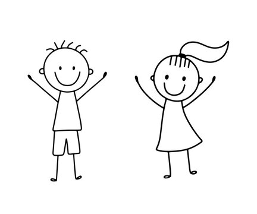
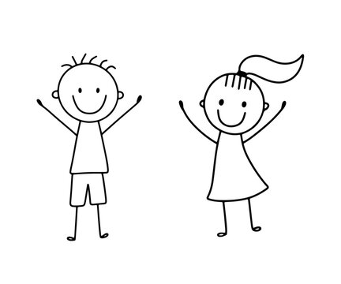

A STEM degree equips you with a broad range of transferable skills that are highly valued in various professions.
Excellent Salary
STEM careers offer excellent opportunities for international travel and collaboration. The demand for STEM professionals extends worldwide.
Encourages Independence
Fields fill you with the joy of exploration and discovery, hands-on experimentation, and rewarding results.
Critical Thinking
For instance, STEM encourages students to explore and analyse, developing critical thinking and problem-solving skills.
Hands on Learning
Incorporates Hands-On Learning. While many subjects rely on lecture-based lessons, STEM can provide a break in that learning style and provide hands-on interactions
Job Demand
With the rapid growth of job opportunities, your employability is increased, especially in topics that have become the priority today
 
